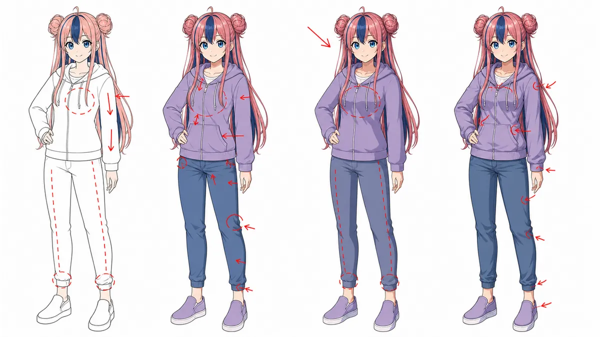
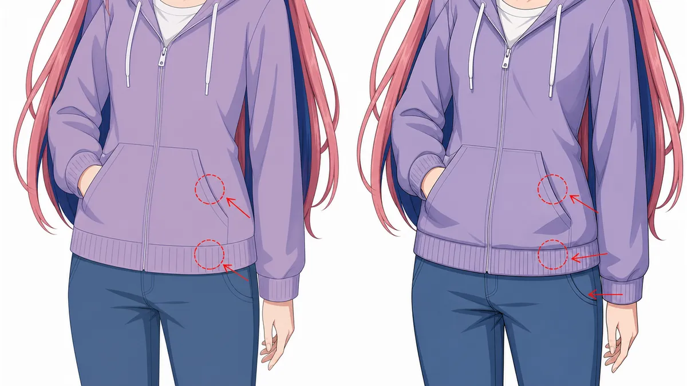
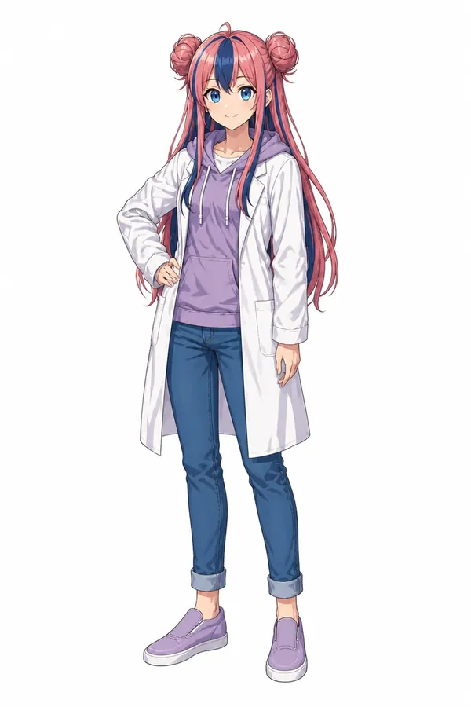

무엇을: 주름 없는 선화에 접점 → 주름 → 그림자 순서로 주름과 그림자를 직접 넣어 봅니다.
왜 중요한가: 순서를 알면 처음 보는 옷·자세도 같은 방법으로 그릴 수 있고, AI 그림의 틀린 주름도 찾아냅니다.
작업에서는: 캐릭터 설정화를 다듬거나, AI가 그린 옷 주름·그림자를 검수할 때 씁니다.
그림 실력·코드·수식을 몰라도 됩니다. 실험을 눌러 보며 따라오세요.
낱말·약어 풀이 (펼치기)
접점
천이 몸에 걸리거나 붙잡힌 곳. 주름의 출발점
꼭대기
가슴·무릎처럼 가장 볼록해 천이 걸려 버티는 곳
당김 주름 · 모임 주름 · 처짐 주름
힘이 당겨서 / 남는 천이 모여서 / 중력으로 늘어져서 생긴 주름
입체 그림자
빛을 등진 면에 생기는 그림자(陰)
떨어지는 그림자
다른 물체가 빛을 가려 생기는 그림자(影)
개더 · 프릴
긴 천을 짧은 띠에 줄여 꿰매 만든 물결 주름
플리츠(주름치마)
같은 간격으로 접어 다린 주름
고정 주름
단추처럼 천을 한 점에 붙잡은 곳에서 퍼지는 주름
라디안
각도를 '반지름 몇 개만큼의 호'로 잰 단위. 180° = 3.14
깊이 지도
가까울수록 밝게 칠한 흑백 그림. AI에 겹침 순서를 알려 준다
노멀 지도
면이 향한 방향을 빨강·초록·파랑으로 저장한 그림
다시 조명(리라이팅)
그림을 다시 그리지 않고 광원만 바꿔 그림자를 새로 계산하는 일
오늘의 과제
박사오늘은 원리를 실제 그림에 넣어 보는 날이다. 첫 모델은 후드 집업을 입은 하루.
주판봇주름은 많을수록 멋집니다! 바로 그리겠습니다!
초파리 연구원천이 어디에 걸렸는지부터 봐야 하지 않을까?
조수 하루실험복은 벗었어요. 오늘은 후드 집업에 조거 바지예요.
30초 복습 — 기초편에서 본 세 가지 — ① 주름은 당김(힘이 당겨서)·모임(남는 천이 모여서)·처짐(중력으로) 세 종류. ② 그림자는 빛을 등진 면의 입체 그림자와, 다른 물체가 빛을 가린 떨어지는 그림자 두 종류. ③ 밝기는 빛과 면이 마주 보는 정도로 정해진다. 1부는 이 셋을 선화 한 장에 차례로 넣습니다. 기초편 보기
이 단계의 한계 — 몸에 딱 붙는 신축 소재는 빈 곳이 거의 없어 이 규칙이 약해집니다. 여기서는 보통 두께의 면 소재를 기준으로 봤어요.
확인 퀴즈 — 팔을 들어 겨드랑이와 가슴 꼭대기에 천이 걸렸다. 앞판 주름의 방향은?
주름은 접점과 꼭대기를 잇습니다.실험에서 접점을 켜고 꼭대기를 옮겨 보세요.
1부 · 4단계
그림자는 큰 형체부터 — 구와 원기둥으로 먼저
광원을 정하고, 가슴은 구·다리는 원기둥으로 보고 큰 그림자를 먼저 넣은 뒤 주름 그림자를 얹습니다
방법: 큰 것 먼저일상: 찌그러진 캔
왜 이 방법을 쓰나
문제 — 주름마다 작은 그림자부터 넣으면 몸 전체의 둥근 덩어리가 사라지고 천이 납작해 보입니다.
앞 방법의 한계 — 옷 아래 몸은 구·원기둥 같은 큰 형체이고, 빛을 등진 쪽 절반이 큰 입체 그림자가 됩니다.
해법 — 광원 → 큰 형체 그림자 → 주름 그림자 순서로 넣습니다. 주름 그림자는 큰 그림자 안에서는 생략해도 됩니다.
쉽게 말하면 — 캔 음료에 찌그러진 자국이 있어도, 먼저 눈에 들어오는 것은 캔 한쪽 전체가 어두운 큰 그림자입니다.
일상으로 치면
창가에 선 사람을 보면 옷 주름보다 몸 한쪽 전체의 그늘이 먼저 눈에 들어옵니다.
그림·VFX 현장에서는
3D 렌더링도 큰 형체의 음영을 먼저 계산하고, 주름 같은 작은 굴곡은 '노멀 지도'라는 얇은 층으로 덧붙입니다(4부 5단계). 순서가 같습니다.
박사빛은 머리 위 조금 왼쪽에서 온다. 하루의 후드 그림자, 어디부터 칠할까?
주판봇주름마다 하나씩 그림자 스무 개! 꼼꼼하게!
초파리 연구원가슴은 구, 다리는 원기둥 아니야? 이걸 눌러 봐 — 큰 형체 먼저.
조수 하루큰 그림자를 먼저 넣으니 주름 그림자 몇 개만 더해도 둥글게 보여요.
실험 1-4광원 각도를 바꾸고, 그림자 넣는 순서를 바꿔 보세요
풀이
'주름 그림자만'으로 칠하면 형체가 평평한 판처럼 보입니다.
'큰 형체 먼저'로 칠하면 광원 반대쪽 절반이 한 덩어리로 어두워지고, 주름 그림자는 밝은 쪽에서만 또렷합니다.
작업에서는 그림자 레이어를 둘로 나눠 큰 형체 그림자를 먼저 칠하고, 그 위에 주름 그림자를 얹습니다.

위에서 빛을 받은 하루 — 주름 없는 선화, 주름 선화, 큰 형체 그림자, 주름 그림자까지 넣은 완성의 네 장면
AI 판단 코너 — 그대로 믿어도 될까?
AI 그림에서 하루의 두 다리가 똑같이 어둡고, 주름 그림자만 여기저기 진합니다. 광원은 왼쪽 위입니다. 무엇을 고칠까요?
확인해 보기
광원 반대쪽(오른쪽) 다리 면이 큰 그림자가 되어야 합니다. 양쪽이 같다면 큰 형체 그림자가 빠지고 주름 그림자만 남은 것입니다.
이 단계의 한계 — 실제 사람 몸은 구와 원기둥보다 굴곡이 많습니다. 여기서는 큰 덩어리를 보는 연습을 위해 단순하게 봤어요. 밝기 계산 원리는 기초편 2부를 참고하세요.
확인 퀴즈 — 그림자를 넣는 순서로 알맞은 것은?
큰 것부터, 작은 것은 나중입니다.실험에서 두 순서를 비교해 보세요.
1부 · 5단계
작은 단차에도 떨어지는 그림자
주머니·밑단 고무단·지퍼 덮개처럼 조금 튀어나온 곳 아래에 얇은 그림자 띠를 넣으면 입체가 살아납니다
방법: 단차 높이 재기일상: 벽에 건 액자
왜 이 방법을 쓰나
문제 — 큰 그림자와 주름 그림자를 넣어도 주머니·밑단이 몸에 그려진 그림처럼 납작해 보일 수 있습니다.
앞 방법의 한계 — 천이 겹쳐 조금 튀어나온 곳은 아래쪽 천에 빛을 가려 얇은 떨어지는 그림자를 드리웁니다.
해법 — 단차 아래에 얇은 띠 그림자를 넣습니다. 띠의 폭은 단차 높이와 빛이 옷 면에 닿는 각도로 정합니다.
쉽게 말하면 — 책 위에 공책을 올려 두면 공책 가장자리를 따라 가는 그림자 띠가 생겨 공책이 떠 보입니다.
수학 수식을 어려워하는 조수가 대신 물어봅니다
조수 그림자 띠는 얼마나 두껍게 그려야 해요?
말로 하면 — 빛이 옷 면을 정면으로 비출수록 띠는 얇고, 면을 스치듯 비출수록 길어집니다. 띠 길이는 단차 높이를 '빛이 면과 이루는 각의 tan'으로 나눈 값입니다.
학교 수학으로 보면 — 삼각비(tan) — 직각삼각형에서 높이 ÷ 밑변 = tan(각). 밑변이 곧 그림자 길이입니다.
그림자 길이 = 단차 높이 ÷ tan(빛이 면과 이루는 각)
식 조각
뜻
단차 높이
튀어나온 천의 두께(주머니·밑단)
빛이 면과 이루는 각
90°면 면을 정면으로 비춤, 작을수록 스치듯 비춤
tan
높이 ÷ 밑변 비율. tan 45° = 1
숫자로 한 번 해 보기
단차 1cm, 각 45°: 1 ÷ 1 = 1cm
단차 1cm, 각 60°: 1 ÷ 1.73 = 약 0.58cm — 얇아짐
단차 1cm, 각 30°: 1 ÷ 0.58 = 약 1.73cm — 두꺼워짐
조수 머리 위 조명이면 세로로 선 몸통은 빛을 스치듯 받으니, 주머니 아래 띠가 두꺼워지겠네요.
박사여기서 한 번 멈춰도 괜찮아요. 식이 낯설면 건너뛰고 아래 실험부터 눌러 보세요. 숫자는 실험이 대신 계산해 줍니다.
일상으로 치면
벽에 건 액자는 천장 조명 아래에서 아래쪽 가장자리를 따라 그림자가 생깁니다. 조명이 벽을 스칠수록 그 띠가 길어집니다.
그림·VFX 현장에서는
렌더링에서는 이런 좁은 틈의 어둠을 '주변 가림' 층으로 따로 계산합니다. 2D 채색에서는 가늘고 진한 그림자 선으로 흉내 냅니다.
박사후드 주머니가 몸에 그린 그림처럼 납작해 보인다. 무엇이 빠졌을까?
주판봇주머니 선을 더 굵게 그리면 됩니다!
초파리 연구원주머니가 튀어나온 만큼 아래에 그림자가 생기지 않을까? 이걸 눌러 봐 — 단차와 빛.
조수 하루단차 1cm에 빛이 면과 30°면 그림자가 1.7cm예요. 띠 하나로 주머니가 떴어요.
실험 1-5단차 높이와 빛이 옷 면에 닿는 각도를 바꿔 보세요
풀이
빛이 면과 이루는 각이 90°(정면)면 그림자가 0이고, 각이 작아질수록 띠가 급격히 길어집니다.
단차가 두꺼울수록 띠도 같은 비율로 두꺼워집니다. 고무단·두꺼운 주머니는 띠가 굵습니다.
작업에서는 밑단·주머니·지퍼 덮개 아래에 얇은 띠 그림자를 넣어, 천이 겹쳐 있다는 정보를 줍니다.

하루의 후드 주머니·밑단 고무단·바지 주머니 아래에 얇은 그림자 띠를 넣기 전과 넣은 뒤를 나란히 놓은 확대 그림
AI 판단 코너 — 그대로 믿어도 될까?
AI 그림의 하루 후드 주머니에 그림자 띠가 주머니 위쪽에 있습니다. 광원은 머리 위입니다. 맞을까요?
확인해 보기
위에서 빛이 오면 튀어나온 주머니 가장자리가 아래쪽 천을 가리므로, 띠는 주머니 아래에 생겨야 합니다. 위쪽 띠는 광원과 맞지 않습니다.
이 단계의 한계 — 실제 그림자 가장자리는 광원 크기에 따라 흐려집니다(기초편 2부 4단계). 여기서는 길이만 봤어요.
확인 퀴즈 — 단차 1cm, 빛이 옷 면과 45°를 이룬다. 그림자 띠 길이는?
tan 45° = 1이라 1 ÷ 1 = 1cm입니다.tan 45°의 값을 떠올려 보세요.
1부 · 프롬프트 실습
프롬프트로 직접 만들어 보기 — 하루
박사배운 다섯 단계를 이제 말로 적어 이미지 AI에게 맡겨 보자. 원리를 적은 요청문과 안 적은 요청문은 결과가 다르다.
주판봇'걸작, 아주 자세하게'만 쓰면 다 됩니다!
초파리 연구원접점과 광원을 적지 않으면 AI도 아무 데나 주름을 넣지 않을까?
순서 — ① 아래에서 넣을 원리를 고릅니다. ② 완성된 요청문을 복사해 이미지 AI(이 시리즈는 Genspark)에 붙여 넣고, 같은 인물로 나오게 기초편의 하루 기준 전신 그림을 함께 올립니다. ③ 나온 그림을 점검표로 확인합니다. ④ 틀린 곳은 고치기 문장으로 한 번에 하나씩 고칩니다.
요청문 조립체크한 원리만 들어갑니다
완성된 요청문 (영어 — 이 시리즈 그림은 영어 요청문으로 만들었습니다)
비교용 — 주판봇식 요청문(원리 없음)
anime girl with pink hair, purple hoodie, hand on hip, lots of wrinkles, detailed shading, masterpiece
같은 인물, 다른 요청문 — 실제로 나온 결과
왼쪽은 주판봇식 요청문, 오른쪽은 위에서 조립한 요청문으로 Genspark에서 받은 첫 결과입니다. 고르지 않고 그대로 실었습니다.

주판봇식 요청문 — 첫 결과
초파리식 요청문(위에서 조립) — 첫 결과
AI 판단 — 점검표로 본 이 결과
두 장 모두 요청한 '집업 후드·조거 바지' 대신 기초편 기준 그림의 실험복·청바지가 나왔습니다. 첨부한 기준 그림의 옷이 요청문보다 강하게 따라온 것입니다.
원리를 넣은 쪽이 팔꿈치 안쪽 주름이 조금 더 정리됐지만 차이는 작습니다. 왼쪽 위 광원의 큰 형체 그림자는 두 장 모두 약합니다.
배울 점
첨부한 기준 그림의 옷이 요청문보다 강하게 따라옵니다. 옷을 바꿀 때는 얼굴만 자른 기준 그림을 올리거나, 'not wearing a lab coat'처럼 빼야 할 것을 함께 적습니다.
'일부러 틀리게'나 '그림자 넓이 4분의 3' 같은 요청은 도구가 잘 지키지 않습니다. 고치기 문장으로 한 번에 하나씩 다시 요청합니다.
결과는 매번 달라집니다. 원리를 적었다고 믿지 말고, 위 점검표로 직접 확인하는 것이 이 절의 목적입니다.
결과 점검표 — AI 그림을 그대로 믿어도 될까?0 / 6
하나라도 '아니오'면 아래 고치기 문장을 쓰세요. 여러 곳을 한꺼번에 고치라고 하면 맞던 곳까지 바뀌기 쉽습니다.
고치기 문장(같은 대화에서)
Same character, same pose and style. Change only: put the short bunched folds on the INSIDE of the bent elbow and long stretched folds on the outside. Still no text.
이 페이지 그림을 실제로 만든 요청문 보기 — p1_haru_contacts
Character illustration.
High-quality anime illustration, clean confident lineart, two-tone cel shading with soft lavender-gray shadows, plain white background, natural proportions of young adults in their early twenties, modest outfit exactly as described.
Character: Haru (match the attached reference p5_haru_anime exactly for face and hair): long straight pink hair reaching the waist with navy blue streaks including a thick navy streak down the center of the bangs, two round slightly messy hair buns on top of the head, a small ahoge, big bright blue eyes. For this lesson her lab coat is off: lavender zip-up hoodie with white drawstrings over a white t-shirt, gray-blue jogger pants with ribbed ankle cuffs, lavender slip-on sneakers.
Full body, standing in a three-quarter view, right hand resting on her hip so the elbow is bent outward, left arm relaxed, left knee slightly forward. Clean line art with flat light fills and NO folds or shadows on the clothes yet (a 'no wrinkles' base drawing). Five red circles mark the contact points: the top of the shoulder, the top of the chest, the hand pressing the hoodie at the hip, the outside of the bent elbow, and the front of the forward knee.
Annotation marks drawn on top: only simple red hand-drawn arrows, red circles and red dashed lines — absolutely no words or numbers.
No text, no letters, no numbers, no logos, no watermark, no revealing clothing, no exaggerated body proportions, not resembling any famous anime character, no pixel art.
빨간 화살표·동그라미 지시(Annotation 줄)는 설명용 표시를 넣으려고 붙인 것입니다. 일반 그림에는 빼세요.
평가단 채점
1부 평가 — 하루의 후드에 접점과 형체가 살았나
박사주판봇은 주름을 고르게 흩뿌리고, 초파리는 접점 → 꼭대기 → 큰 그림자 → 단차 순서로 넣었다.